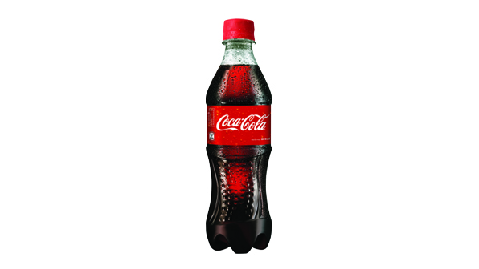

TIN TỨC - SỰ KIỆN NỔI BẬT

Ai là sáng lập thương hiệu Coca-Cola
Dược sĩ John S Pemberton. Ông chính là người đã sáng lập ra CocaCola vào ngày 08/05/1886 tại Atlanta, Georgia. Dược sĩ Pemberton đã thử bán cho khách hàng tại một tiệm thuốc địa phương do mình làm chủ tên là Jacobs' Pharmacy, tại đây đồ uống này ngày một phổ biến và nhanh chóng được bán ra với giá 5 cent một cốc. Bạn có biết? Một người bạn là đối tác của Dược sĩ Pemberton, ông Frank M Robinson chính là người đã sáng tạo ra tên gọi Coca-Cola. Ông đã tự tay viết tên thương hiệu bằng phông chữ Spencerian script và cho đến nay chúng tôi vẫn sử dụng để làm logo của mình.
Dược sĩ John S Pemberton. Ông chính là người đã sáng lập ra CocaCola vào ngày 08/05/1886 tại Atlanta, Georgia. Dược sĩ Pemberton đã thử bán cho khách hàng tại một tiệm thuốc địa phương do mình làm chủ tên là Jacobs' Pharmacy, tại đây đồ uống này ngày một phổ biến và nhanh chóng được bán ra với giá 5 cent một cốc. Bạn có biết? Một người bạn là đối tác của Dược sĩ Pemberton, ông Frank M Robinson chính là người đã sáng tạo ra tên gọi Coca-Cola. Ông đã tự tay viết tên thương hiệu bằng phông chữ Spencerian script và cho đến nay chúng tôi vẫn sử dụng để làm logo của mình.
RA MẮT SẢN PHẨM MỚI
Thành phố Hồ Chí Minh, ngày 01 tháng 03 năm 2018 - Hôm nay, Công Ty TNHH Nước Giải Khát Coca-Cola Việt Nam (Coca-Cola Việt Nam) chính thức giới thiệu sản phẩm Coca-Cola thêm cà phê nguyên chất mới lạ, đặc biệt dành cho những khi bạn cần vực dậy tinh thần tỉnh táo sau giờ làm việc và học tập uể oải. Sản phẩm lần đầu tiên được ra mắt tại thị trường Việt Nam, sau thị trường Úc và Nhật. Sản phẩm Coca-Cola thêm cà phê nguyên chất mới chính là sự kết hợp sáng tạo và độc đáo giữa hương vị Coca-Cola thơm ngon tràn đầy hứng khởi cùng cà phê nguyên chất, thức uống vốn là thói quen và nay đã trở thành nét văn hóa trong đời sống người Việt.
Thành phố Hồ Chí Minh, ngày 01 tháng 03 năm 2018 - Hôm nay, Công Ty TNHH Nước Giải Khát Coca-Cola Việt Nam (Coca-Cola Việt Nam) chính thức giới thiệu sản phẩm Coca-Cola thêm cà phê nguyên chất mới lạ, đặc biệt dành cho những khi bạn cần vực dậy tinh thần tỉnh táo sau giờ làm việc và học tập uể oải. Sản phẩm lần đầu tiên được ra mắt tại thị trường Việt Nam, sau thị trường Úc và Nhật. Sản phẩm Coca-Cola thêm cà phê nguyên chất mới chính là sự kết hợp sáng tạo và độc đáo giữa hương vị Coca-Cola thơm ngon tràn đầy hứng khởi cùng cà phê nguyên chất, thức uống vốn là thói quen và nay đã trở thành nét văn hóa trong đời sống người Việt.

GIỚI THIỆU CHUNG
Coca-Cola (thường được nói tắt là Coca) là một thương hiệu nước ngọt có ga chứa nước cacbon điôxít bão hòa được sản xuất bởi Công ty Coca-Cola. Coca-Cola ban đầu được điều chế bởi dược sĩ John Pemberton vào cuối thế kỷ XIX với mục đích trở thành một loại biệt dược. Tuy nhiên, doanh nhân người Mỹ Asa Griggs Candler sau đó đã mua lại công thức loại thuốc uống này, và bằng những chiến thuật tiếp thị thông minh, ông đã đưa Coca-Cola trở thành một trong những sản phẩm dẫn đầu thị trường nước ngọt có ga trong thế kỷ XX. Tên của Coca-Cola bắt nguồn từ hai thành phần nguyên bản của thức uống này: hạt côla (chứa nhiều caffein) và lá cây côca. Hiện nay, công thức Coca-Cola vẫn còn là một bí mật thương mại, dù cho nhiều công thức thử nghiệm khác nhau đã được công bố rộng rãi.
Coca-Cola (thường được nói tắt là Coca) là một thương hiệu nước ngọt có ga chứa nước cacbon điôxít bão hòa được sản xuất bởi Công ty Coca-Cola. Coca-Cola ban đầu được điều chế bởi dược sĩ John Pemberton vào cuối thế kỷ XIX với mục đích trở thành một loại biệt dược. Tuy nhiên, doanh nhân người Mỹ Asa Griggs Candler sau đó đã mua lại công thức loại thuốc uống này, và bằng những chiến thuật tiếp thị thông minh, ông đã đưa Coca-Cola trở thành một trong những sản phẩm dẫn đầu thị trường nước ngọt có ga trong thế kỷ XX. Tên của Coca-Cola bắt nguồn từ hai thành phần nguyên bản của thức uống này: hạt côla (chứa nhiều caffein) và lá cây côca. Hiện nay, công thức Coca-Cola vẫn còn là một bí mật thương mại, dù cho nhiều công thức thử nghiệm khác nhau đã được công bố rộng rãi.